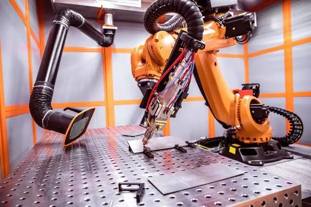

在自动化设备工业4.0及“互联网+”的背景下，数控系统的未来发展与竞争出现了全新的改革，在中国更多的竞争将会聚焦在如何利用互联网的优势，让数控系统的计算能力获得无限扩展，并且通过对分享经济等新兴商业模式的理解，合理打造与之相适应的功能成为未来的重要趋势。

机床在加工过程中通过采用各种传感器，借助实时监控和补偿技术，进一步提高机床的性能。日本马扎克、大隈等公司在智能化方面提供了许多先进的技术，如主轴抑振、智能防碰撞等功能。沈阳机床i5数控提供了基于特征的编程和图形化诊断等功能。
智能化的发展是一个循序渐进的过程，目前对智能化还有不同的理解，也没有普遍适用的解决方案。数控机床商业模式的创新和真正落地运营就一定依赖于数控系统的智能化与网络化。
未来的数控系统将会越来越多地将互联网的影响渗透到制造环节，通过数据的累积、传输和挖掘，将会诞生越来越多的智能化制造能力，透明和分享化将会为制造业带来翻天覆地的变革。